Die Benutzeroberfläche
Dieses Kapitel beschreibt den Oberflächenstil BIMopen, mit dem BIMopen startet, auf dem Desktop und im Browser. Die anderen Erscheinungsbilder, der Stil Klassisch und der Touch-Modus für Tablets und Telefone, führen dieselben Befehle mit denselben Namen aus; Oberflächenstile zeigt sie und erklärt, wie man wechselt.
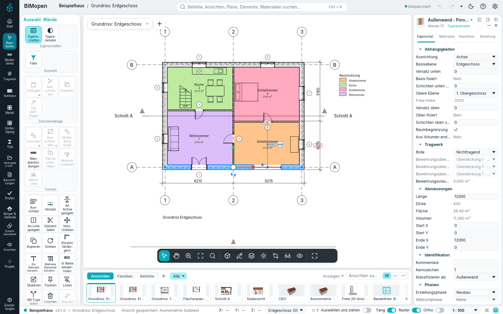
Das Fenster hat diese Teile:
- die Seitenleiste am linken Rand: das Zeichen von BIMopen, das das Anwendungsmenü öffnet, dann Start, die kontextabhängige Registerkarte Bearbeiten, die Registerkarten Modellieren, Tragwerk, Stahlbeton, Metall, Vorfertigung, TGA, Verknüpfen und importieren, Beschriftungen, Prüfen, Körper & Gelände, Zusammenarbeit, Ansichten und Projekt, und unten Einstellungen;
- der Werkzeugbereich neben der Seitenleiste: die Gruppen der in der Seitenleiste gewählten Registerkarte, als gerahmte Blöcke mit Kacheln;
- die obere Leiste: das Projekt und die aktive Ansicht, die Befehlssuche, die zugleich die Befehlszeile ist, der Speicherstatus, Rückgängig und Wiederholen, die Schnellzugriffswerkzeuge, das helle oder dunkle Design, das Menü ? und Optionen;
- der Zeichenbereich in der Mitte: die Ansichten, jede mit ihrer Ansichtsauswahl oben und der Ansichtsleiste unten; solange ein Werkzeug arbeitet, läuft der Optionsstreifen darüber;
- der Elementbereich rechts: die Eigenschaften der Auswahl oder der aktiven Ansicht;
- der Ansichten- und Familienstreifen unter dem Zeichenbereich, den Sie ausblenden können (F9);
- die Statusleiste am unteren Rand.
Die Bereiche behalten ihre Breite, was sie auch zeigen: ein langer Name wird mit «…» gekürzt, und sein Tooltip zeigt ihn ganz. Ziehen Sie den Rand des Werkzeugbereichs oder des Elementbereichs, um ihn breiter oder schmaler zu machen; BIMopen merkt es sich für die nächste Sitzung. Ein Klick auf die bereits gewählte Registerkarte der Seitenleiste klappt den Werkzeugbereich ein, ein zweiter Klick öffnet ihn wieder. Ohne Touch ist die Oberfläche kompakt, damit der Zeichenbereich so viel Platz wie möglich hat; im Touch-Modus bleiben die Schaltflächen groß (siehe Oberflächenstile).
Auf Arabisch ist das ganze Fenster gespiegelt: Die Seitenleiste und der Werkzeugbereich sind rechts, der Elementbereich links, und die Streifen lesen sich von rechts nach links.
Anwendungsmenü
Das Zeichen von BIMopen oben in der Seitenleiste öffnet das Anwendungsmenü: die Befehle, die auf das ganze Projekt wirken. Der Eintrag Start der Seitenleiste zeigt das Projekt mit seinen Ebenen, Ansichten, Plänen und Bauteillisten und erinnert daran, dass die Dateibefehle in diesem Menü stehen.
| Eintrag | Funktion |
|---|---|
| Neu | Schließt das aktuelle Projekt und beginnt ein neues aus der Standardvorlage: zwei Ebenen mit ihren Grundrissen und die Standardtypen |
| Öffnen… | Öffnet ein .bimopen-Projekt oder öffnet eine .ifc-Datei als neues Projekt, ausgewählt in einem Dateidialog. Im Browser ziehen Sie die Datei stattdessen in die Seite |
| Beispielprojekt | Öffnet das Beispielhaus |
| Speichern Ctrl+S | Speichert das Projekt in seiner Datei; ein noch nie gespeichertes Projekt fragt wie Speichern unter… nach einem Namen |
| Speichern unter… | Speichert das Projekt in einer neuen .bimopen-Datei und arbeitet mit dieser Datei weiter |
| Drucken… Ctrl+P | Druckt Pläne als PDF |
| Exportieren ▸ IFC4 exportieren… | Schreibt das Modell als IFC4-Datei |
| Exportieren ▸ Grundriss als SVG exportieren… | Schreibt den aktiven Grundriss als SVG-Zeichnung |
| Exportieren ▸ Ansicht als PNG exportieren… | Schreibt die aktive Ansicht als PNG-Bild |
| Geöffnete Dokumente | Listet die geöffneten Ansichtsfenster auf; ein Klick auf eines holt es nach vorn |
| Optionen | Öffnet den Dialog Optionen |
| Beenden | Schließt BIMopen (nur Desktop) |
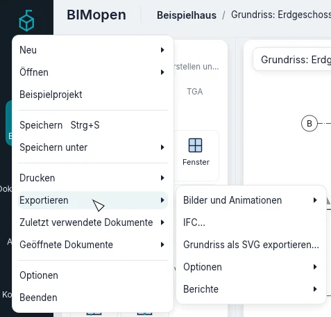
Neu, Öffnen… und Beispielprojekt ersetzen das aktuelle Projekt ohne Rückfrage: Speichern Sie es vorher, wenn Sie es behalten möchten.
Warning
Ungespeicherte Änderungen gehen verloren, wenn Sie Neu, Öffnen… oder Beispielprojekt wählen. Die obere Leiste zeigt Nicht gespeicherte Änderungen, solange es Änderungen zu speichern gibt.
Optionen
Das Zahnrad am rechten Ende der oberen Leiste, Einstellungen unten in der Seitenleiste oder Anwendungsmenü ▸ Optionen öffnet Optionen. Der Dialog hat unter anderem diese Einstellungen:
| Einstellung | Werte | Wirkung |
|---|---|---|
| Benutzeroberfläche ▸ Sprache | Italiano, English, Deutsch, Français, Español, العربية | Die Sprache der ganzen Benutzeroberfläche, sofort |
| Benutzeroberfläche ▸ Design | Hell, Dunkel | Die Farben des Fensters. Dunkel schaltet auch Hintergrundfarbe umkehren ein. Auch die Sonne bzw. der Mond in der oberen Leiste schaltet es um |
| Benutzeroberfläche ▸ Oberfläche | BIMopen, Klassisch | Der Oberflächenstil, siehe Oberflächenstile |
| Benutzeroberfläche ▸ Touch-Modus | Automatisch, Immer, Nie | Die Anordnung für Touchscreens, siehe Oberflächenstile |
| Grafik ▸ Hintergrundfarbe umkehren | ein, aus | Ansichten mit dunklem Hintergrund und hellen Linien |
| Orientierungswürfel ▸ Größe des Orientierungswürfels, Deckkraft bei Inaktivität | Klein, Mittel, Groß; 0 % bis 100 % | Die Größe des Würfels und wie stark er sichtbar ist, während der Zeiger woanders ist |
| Orientierungswürfel ▸ Szene aufrecht halten | ein, aus | Beim Ziehen des Würfels steht das Modell nie auf dem Kopf; aus, kann die Ansicht über den Scheitel hinausgehen |
| Orientierungswürfel ▸ An Ansicht anpassen | ein, aus | Ein Klick auf den Würfel passt das Modell auch an das Fenster an |
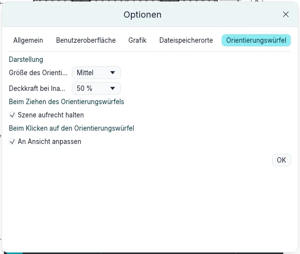
BIMopen merkt sich Sprache, Design und Stil für den nächsten Start.
Obere Leiste und Schnellzugriffswerkzeuge
Die obere Leiste zeigt von links BIMopen, den Namen des Projekts (ein Klick öffnet Informationen zum Projekt) und die aktive Ansicht; in der Mitte die Befehlssuche; rechts:
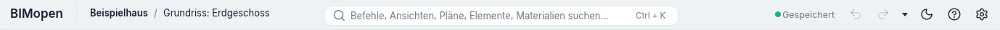
| Steuerelement | Funktion |
|---|---|
| Gespeichert / Nicht gespeicherte Änderungen | Der Speicherstatus; ein Klick speichert, Ctrl+S |
| Rückgängig | Macht die letzte Änderung rückgängig, Ctrl+Z. Ausgegraut, wenn es nichts rückgängig zu machen gibt |
| Wiederholen | Stellt die gerade rückgängig gemachte Änderung wieder her, Ctrl+Y. Ausgegraut, wenn es nichts wiederherzustellen gibt |
| Die Schnellzugriffswerkzeuge | Die von Ihnen hinzugefügten Werkzeuge, dann der Pfeil des Schnellzugriff-Werkzeugkastens |
| Die Sonne oder der Mond | Wechselt zum hellen oder zum dunklen Design |
| ? | Hilfe F1, Befehle (alle Befehle der Befehlszeile, wie die Eingabe von help) und Info (die Version, die Lizenz und die Danksagungen) |
| Das Zahnrad | Optionen |
Klicken Sie mit der rechten Maustaste auf eine Kachel des Werkzeugbereichs und wählen Sie Zum Schnellzugriff-Werkzeugkasten hinzufügen: Das Werkzeug erscheint in der oberen Leiste und startet von dort, welcher Eintrag der Seitenleiste auch geöffnet ist. Ein Rechtsklick darauf bietet dort Aus Schnellzugriff-Werkzeugkasten entfernen oder Trennlinie hinzufügen (eine Linie rechts davon). Der kleine Pfeil nach den Werkzeugen, Schnellzugriff-Werkzeugkasten anpassen, listet die Standardwerkzeuge (Öffnen…, Speichern, Ausgerichtete Bemaßung, Nach Kategorie beschriften, Text, 3D-Ansicht, Schnitt, Verdeckte schließen, Ansicht wechseln): ein Häkchen zeigt eines, ohne Häkchen wird es entfernt. Im selben Menü öffnet Schnellzugriff-Werkzeugkasten anpassen… ein Fenster mit den Werkzeugen in ihrer Reihenfolge: Nach oben und Nach unten verschieben das gewählte, Trennlinie hinzufügen setzt eine Linie dahinter, Entfernen nimmt es (oder eine Linie) weg, OK übernimmt. Die Werkzeuge bleiben für die nächsten Sitzungen erhalten.
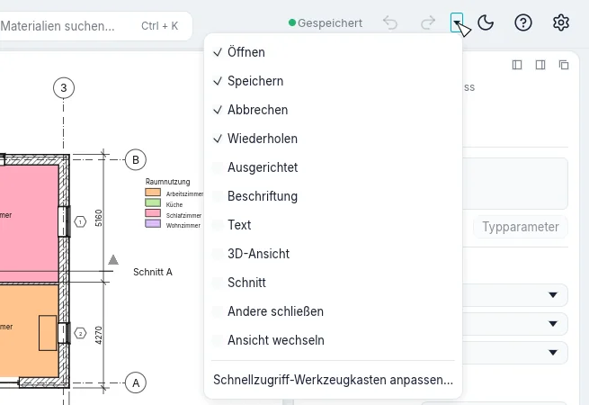
? ▸ Hilfe (F1) öffnet dieses Handbuch in der Sprache der Benutzeroberfläche im Browser. F1 öffnet die Seite zu dem, was Sie gerade tun: zum geöffneten Dialog, zur Kachel unter der Maus (ihr Tooltip endet mit Drücken Sie F1, um weitere Informationen zu erhalten) oder zum aktiven Werkzeug.
Seitenleiste und Werkzeugbereich
Die Seitenleiste listet die Registerkarten des Menübands des Stils Klassisch auf, mit denselben Namen und in derselben Reihenfolge. Klicken Sie auf eine Registerkarte: Der Werkzeugbereich zeigt ihre Gruppen als gerahmte Blöcke, jeder mit seinem Namen unten, und in jedem Block seine Befehle in der Reihenfolge des Menübands, drei pro Zeile, als Kacheln mit Symbol und Namen. Ein langer Name steht auf bis zu drei Zeilen, umbrochen zwischen Wörtern oder an einer Silbe mit Trennstrich. Eine Kachel mit einer kleinen Marke ▾ in der Ecke hat ein Menü: Ein Klick auf die Kachel startet den Befehl, ein Klick auf die Marke öffnet das Menü mit seinen Varianten. Ruht die Maus auf einer Kachel, zeigt sie, was sie tut, und in Klammern das Kürzel, mit dem Sie sie per Tastatur starten. Befehle, die BIMopen noch nicht ausführt, sind ausgegraut, und ihr Tipp sagt „Noch nicht verfügbar“; Ebene, Raster und Führungsebene sind in einer 3D-Ansicht ausgegraut („In der 3D-Ansicht nicht verfügbar“). Hat eine Registerkarte mehr Befehle, als der Bereich auf einmal zeigt (Modellieren, Tragwerk), lässt er sich rollen. Einstellungen unten in der Seitenleiste öffnet Optionen.
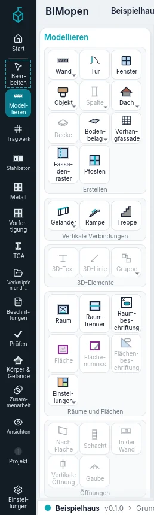
| Registerkarte | Gruppe | Befehle |
|---|---|---|
| Modellieren | Erstellen | Wand ▾, Tür, Fenster, Objekt ▾, Spalte ▾, Dach ▾, Decke, Bodenbelag ▾, Vorhangfassade, Fassadenraster, Pfosten |
| Vertikale Verbindungen | Geländer ▾, Rampe, Treppe | |
| 3D-Elemente | 3D-Text, 3D-Linie, Gruppe ▾ | |
| Räume und Flächen | Raum, Raumtrenner, Raumbeschriftung ▾, Fläche ▾, Flächenumriss, Flächenbeschriftung ▾ | |
| Öffnungen | Nach Fläche, Schacht, In der Wand, Vertikale Öffnung, Gaube | |
| Referenzen | Ebene, Raster | |
| Arbeitsebene | Festlegen, Anzeigen, Führungsebene, Ebenenansicht | |
| Tragwerk | Tragwerkselemente | Träger, Tragende Wand ▾, Tragende Stütze, Tragende Geschossdecke ▾, Fachwerkträger, Aussteifung, Trägerlage |
| Anschlüsse | Anschluss ▾, Automatische Verbindungen | |
| Fundamente | Einzelfundament, Streifenfundament, Bodenplatte ▾ | |
| 3D-Elemente | Objekt ▾, 3D-Text, 3D-Linie, Gruppe ▾ | |
| Öffnungen | Senkrecht zur Fläche, Schacht, In der Wand, Vertikale Öffnung, Gaube | |
| Referenzen | Ebene, Raster | |
| Arbeitsebene | Festlegen, Anzeigen, Führungsebene, Ebenenansicht | |
| Stahlbeton | Bewehrung | Bewehrung, Bewehrung entlang eines Pfads, Anpassbare Bewehrung, Flächenbewehrung, Flächenmatte, Einzelmatte, Betondeckung, Muffe |
| Einstellungen | Betondeckungsoptionen, Bewehrungsoptionen | |
| Arbeitsebene | Festlegen, Anzeigen, Führungsebene, Ebenenansicht | |
| Metall | Anschlüsse | Anschluss ▾, Automatische Verbindungen |
| Stahlbauteile | Blech, Schrauben ▾, Schweißen | |
| Bearbeitungen | Ausklinkung, Schrägschnitt, Kürzen, Konturschnitt | |
| Automatische Schnitte | Endschnitt, Eckverbindung ▾, Schnittpunkt, Schneiden mit | |
| Arbeitsebene | Festlegen, Anzeigen, Führungsebene, Ebenenansicht | |
| Vorfertigung | Unterteilung | Unterteilen |
| Fugen | Montageteile | |
| Bewehrung | Bewehrung, Maßmatte | |
| Produktion | Werkstattzeichnungen, Für CAM exportieren | |
| Einstellungen | Fertigteileinstellungen, Kaltprofile | |
| Automatische Aktualisierung | Aussetzen ▾ | |
| TGA | Luft | Kanal, Kanal aus einem Pfad, Kanalformstück, Kanalzubehör, Kanaldämmung, Flexibler Kanal, Luftauslass |
| Vorgefertigte Bauteile | Fertigteil, Mehrpunktroute | |
| Anlagendetails | Kanalaussteifung | |
| P&ID-Schemata | P&ID-Editor | |
| Mechanik | Mechanische Ausrüstung, Regelgerät | |
| Weitere Anlagen | Sanitär ▾, Elektro ▾, Modellierung ▾, Arbeitsebene ▾ | |
| Verknüpfen und importieren | Verknüpfen | Projekt verknüpfen, IFC verknüpfen, CAD verknüpfen, Topografie verknüpfen, Abziehbild ▾, Punktwolke, Verknüpfungen verwalten, PDF verknüpfen, Bild verknüpfen, Föderiertes Modell ▾ |
| Importieren | CAD importieren, gbXML importieren, PDF importieren, Bild importieren | |
| Aus Bibliothek laden | Familie laden, Als Gruppe laden, Aus Datei einfügen ▾ | |
| Beschriftungen | Bemaßung | Ausgerichtet, Linear, Winkel, Radial, Durchmesser, Bogenlänge, Punktbemaßung ▾ |
| Detail | Detaillinie, Gefüllter Bereich ▾, Detailsymbol ▾, Revisionswolke, 2D-Gruppe ▾ | |
| Text | Text, Rechtschreibprüfung | |
| Beschriftung | Beschriftung, Alle beschriften, Material, Farblegende, Trägerbeschriftungen, Mehrkategorie-Beschriftung, Ansichtsverweis, Stufennummerierung, Bewehrungsbeschriftung ▾, Codierte Notiz ▾, Kanallegende, Rohrlegende | |
| Symbol | Symbol, Spannrichtung, Bewehrungssymbol, Treppenlauflinie | |
| Prüfen | Energie | Energieanalyse |
| Prüfen | Kollisionen prüfen, Lasten anzeigen, Offene Anschlüsse, Elektrische Lasten, Fluchtweg | |
| Berechnungsmodell | Berechnungsstab, Berechnungsfläche, Berechnungsknoten, Auflager und Lagerungen, Automatisches Berechnungsmodell, Berechnungsergebnisse | |
| Räume und Zonen | MEP-Raum, Raumtrennung, Raumbeschriftung, Raumnamen, Gezeichnete Zone, Zone aus Räumen | |
| Körper & Gelände | Körper | Volumen anzeigen ▾, Neuer Körper, Volumen platzieren, In 3D zeichnen |
| Aus Körperflächen | Vorhangfassade, Dach, Wand, Decke, Gelände aus Fläche | |
| Gelände | Gelände, Geländeelement, Parkplatz, Bauplatz, Umgebung | |
| Gelände bearbeiten | Gelände teilen, Gelände zusammenführen, Teilbereich, Grundstücksgrenze, Geländemodellierung, Höhenlinienbeschriftung | |
| Zusammenarbeit | Gemeinsames Arbeiten | Bearbeitungsbereiche, Synchronisieren, Verlauf anzeigen, Freigabe aktivieren, Aktives Bearbeitungsset, Andere Sets abblenden, Änderungen neu laden, Elemente freigeben, Berechtigungsanfragen, Freigabestatus |
| Archiv | Sicherung wiederherstellen, Veröffentlichungsoptionen | |
| Koordination | Kopieren und überwachen ▾, Koordinationsprüfung ▾, Koordinationsoptionen, Hosts neu ausrichten, Änderungen des föderierten Modells | |
| Ansichten | Grafik | Ansichtsvorgaben ▾, Sichtbarkeit und Grafik, Filter, Dünne Linien, Verdeckte Linien anzeigen, Verdeckte Linien entfernen, Schnittkontur ▾ |
| Präsentation | Realistisches Bild | |
| Erzeugen | 3D-Ansicht ▾, Schnitt, Vergrößertes Detail ▾, Grundriss ▾, Gebäudeansicht ▾, Freie 2D-Ansicht, Ansicht duplizieren ▾, Legenden ▾, Bauteillisten ▾, Ausdehnungsrahmen | |
| Pläne | Plan, Ansicht, Plankopf, Revisionen, Führungsraster, Ansicht deaktivieren | |
| Fenster | Ansicht wechseln ▾, Andere schließen, Nebeneinander, Überlappend, Duplizieren, Maximieren, Paneele ▾ | |
| Projektindex | Der Baum der Ansichten, Bauteillisten, Pläne und Familien des Projekts | |
| Projekt | Einstellungen | Materialien, Stile nach Kategorie, Fang, Projektinformationen, Projektparameter, Projekteinheiten, Einstellungen aus Projekt kopieren, Allgemeine Parameter |
| Phasen | Phasen | |
| Varianten | Entwurfsvarianten, Hauptversion | |
| Nummerierung | Neu nummerieren | |
| Position | Gemeinsame Koordinaten ▾, Projekt verschieben ▾ | |
| Projektverwaltung | Projektbilder, Startansicht | |
| Auswahlen | Auswahl speichern, Auswahl laden, Auswahl bearbeiten | |
| Abfrage | Nach Nummer auswählen, Nummern der Auswahl, Warnungen |
Kursiv die Befehle, die BIMopen noch nicht ausführt; ▾ markiert ein Menü.
Drücken und lösen Sie Alt oder drücken Sie F10, um die Tastentipps zu zeigen: ein Buchstabe auf jeder Registerkarte der Seitenleiste und auf den Kacheln der offenen Registerkarte das Kürzel ihres Werkzeugs. Tippen Sie den Buchstaben einer Registerkarte, um sie zu öffnen, dann die Buchstaben einer Kachel, um ihr Werkzeug zu starten; Esc blendet die Tipps aus. Solange sie sichtbar sind, geht das Getippte nicht in die Befehlszeile.
Die Werkzeuge von Modellieren
Die Werkzeuge, die Sie zum Modellieren am meisten brauchen, stehen in Modellieren:
| Gruppe | Kacheln |
|---|---|
| Erstellen | Wand WA, Tür DR, Fenster WN, Dach RF, Bodenbelag SB, Objekt CM, Fassadenraster CG, Pfosten MU |
| Vertikale Verbindungen | Geländer RA, Treppe ST |
| Räume und Flächen | Raum RM, Raumtrenner RS, Fläche ▾ (Flächenplan, Flächenumriss, Fläche), Legende LG, Einstellungen ▾ (Flächen- und Volumenberechnungen, Farbschemata) |
| Referenzen | Ebene: in einer Ansicht oder einem Schnitt gezeichnet, zwei Klicks auf der Höhe der neuen Ebene (aus einem Grundriss öffnet sie eine Ansicht); Raster GR |
Flächenumriss und Fläche funktionieren in einem Flächenplan: Solange keiner geöffnet ist, sind sie ausgegraut, und ihre QuickInfo fordert dazu auf, zuerst einen Flächenplan zu öffnen.
Die Werkzeuge von Beschriftungen
| Gruppe | Kacheln |
|---|---|
| Bemaßung | Ausgerichtet DI, Linear DL, Winkel DA |
| Text | Text TX |
| Detail | Detaillinie, Gefüllter Bereich, Maskierungsbereich, Detailbauteil CD, Wiederholtes Detail RD, Dämmung IS |
| Beschriftung | Alle beschriften TG |
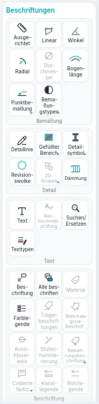
Die Werkzeuge von Ansichten
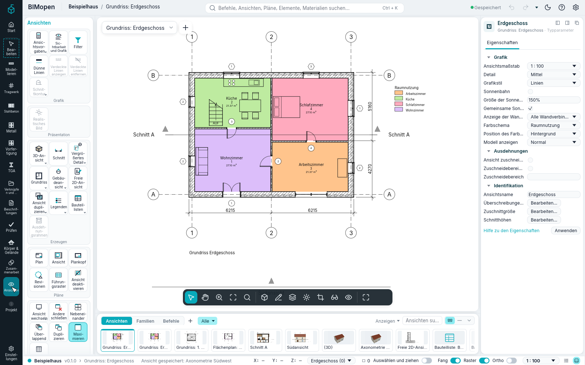
| Gruppe | Kacheln |
|---|---|
| Erzeugen | 3D-Ansicht ▾ (Standard-3D-Ansicht, Ansicht speichern), Grundriss ▾ (Grundriss, Flächenplan), Ansicht duplizieren ▾ (Duplizieren, Mit Detaillierung duplizieren), Schnitt SE, Gebäudeansicht ▾ (Gebäudeansicht EL, Rahmenansicht), Vergrößertes Detail DT (ein Detailausschnitt), Freie 2D-Ansicht VD, Bauteillisten ▾ (Bauteilliste/Mengen, Materialliste, Planliste, Anmerkungsblock, Vordefinierte Bauteillisten) |
| Pläne | Plan: ein neuer Plan mit dem Plankopf Ihrer Wahl; Ansicht: platziert eine Ansicht auf dem geöffneten Plan |
| Grafik | Sichtbarkeit und Grafik VG, Filter, Ansichtsvorlagen, Vorlage auf aktuelle Ansicht anwenden, Vorlage aus aktueller Ansicht erstellen |
| Fenster | Ansicht wechseln, Duplizieren, Überlappend, Nebeneinander, Maximieren, Andere schließen, Paneele |
Pläne ▸ Ansicht funktioniert nur, solange ein Plan geöffnet ist.
Ansicht speichern funktioniert nur, solange eine 3D-Ansicht geöffnet ist, und Mit Detaillierung duplizieren nur für Ansichten, die keine 3D-Ansichten sind. Unter den Werkzeugen enthält die Karte Projektindex den ganzen Baum des Projekts.
Jedes ▾-Menü listet ausgegraut auch die noch nicht verfügbaren Einträge auf; die Befehlssuche findet sie alle.
Die Werkzeuge von Projekt
| Gruppe | Kacheln |
|---|---|
| Einstellungen | Materialien, Informationen zum Projekt, Stile nach Kategorie, Linienstile, Nicht verwendete bereinigen, Projekteinheiten UN, Fang und Weitere Einstellungen (Linienstile, Füllmuster) |
| Abfrage | Prüfen: prüft die Öffnungen und Bezüge des Modells und meldet das Ergebnis in der Befehlszeile |
Fang schaltet den Objektfang für das ganze Programm ein und aus: Solange er eingeschaltet ist, ist die Kachel hervorgehoben, wie der Schalter Fang der Statusleiste. Weitere Einstellungen ▸ Fangen… öffnet das Fenster Fang: die Längen- und Winkelinkremente, die Objektfänge und die Überschreibungen (siehe Fang).
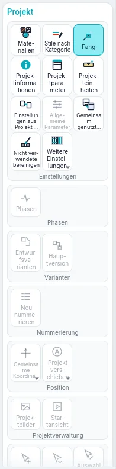
Die kontextabhängige Registerkarte Bearbeiten
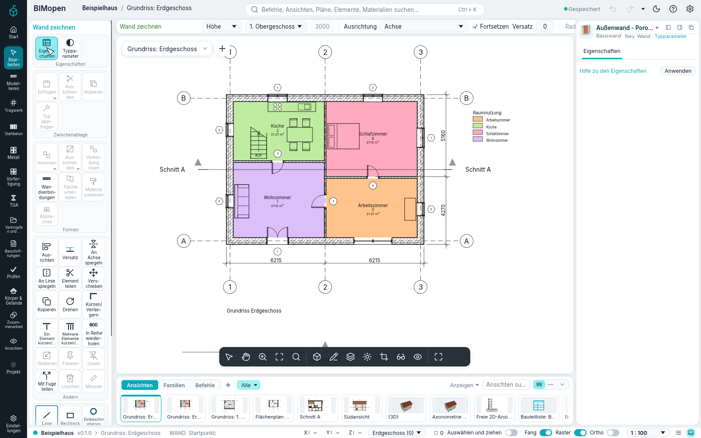
Wenn Sie ein Werkzeug starten oder etwas auswählen, wählt die Seitenleiste von selbst die kontextabhängige Registerkarte Bearbeiten, gestrichelt umrandet, und der Werkzeugbereich zeigt ihre Gruppen unter dem Namen dessen, was Sie gerade tun, in der Akzentfarbe: Wand zeichnen beim Zeichnen von Wänden, Auswahl: Wände bei ausgewählten Wänden, Mehrfachauswahl bei Elementen verschiedener Kategorien, Bearbeiten | … in den anderen Modi. Wenn das Werkzeug endet oder die Auswahl aufgehoben wird, kehrt der Werkzeugbereich zu der Registerkarte zurück, auf der Sie waren; Esc oder ein Klick ins Leere bewirkt dasselbe. Ein Klick auf Bearbeiten zeigt ihre Gruppen jederzeit.
Sie hat immer diese Gruppen:
| Gruppe | Kacheln |
|---|---|
| Eigenschaften | Eigenschaften: blendet den Elementbereich ein oder aus; Typparameter: die Eigenschaften des Typs der Auswahl oder des nächsten Elements, das das Werkzeug platzieren wird |
| Ändern | Ausrichten AL, Versatz OF, An Achse spiegeln MM, An Linie spiegeln DM, Element teilen SL, Mit Fuge teilen SG, Verschieben MV, Kopieren CO, Drehen RO, Kürzen/Verlängern TR, Ein Element kürzen/verlängern, Mehrere Elemente kürzen/verlängern, In Reihe wiederholen AR, Skalieren RE, Fixieren PN, Lösen UP, Löschen (Del) |
Löschen funktioniert nur, wenn etwas ausgewählt ist. Das Kapitel zum Auswählen und Ändern beschreibt die Änderungswerkzeuge.
Weitere Gruppen erscheinen je nach Auswahl oder Werkzeug:
| Wann | Gruppe und Kacheln |
|---|---|
| Etwas ausgewählt | Auswahl: Filter (siehe Auswählen und Ändern) |
| Türen oder Fenster ausgewählt | Öffnung: Öffnungsrichtung umkehren, Anschlag wechseln |
| Wände ausgewählt | Wand ändern: Oben/unten verbinden (die Wände reichen bis zum Dach über ihnen), Oben/unten lösen |
| Eine Ebene ausgewählt | Ansicht: Grundriss öffnen |
| Schnitte oder Ansichten ausgewählt | Schnitt: Segment teilen (nur Schnitte), Umkehren, Gehe zu Ansicht |
| Ein Detailausschnitt ausgewählt | Detail: Gehe zu Ansicht |
| Vorhangfassaden ausgewählt | Vorhangfassade: Fassadenraster, Pfosten, Paneel |
| Werkzeug Bodenbelag oder Dach | Zeichnen: Begrenzungslinie, Wände auswählen |
| Werkzeug Treppe oder Geländer | Modus: Bearbeitungsmodus beenden; Zeichnen: Lauf oder Linien |
| Werkzeug Pfosten | Platzierung: Rasterlinie, Rasterliniensegment, Alle Rasterlinien |
| Ein Detailwerkzeug | Die Zeichenformen des Werkzeugs |
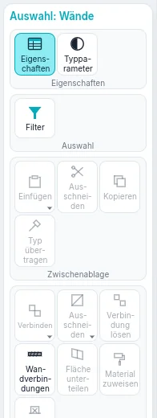
Optionsstreifen
Solange ein Werkzeug arbeitet, läuft oben über die Ansicht ein Streifen: der Name dessen, was Sie gerade tun, dann die Einstellungen des Werkzeugs. Sie gelten für die nächsten Elemente, die Sie platzieren.
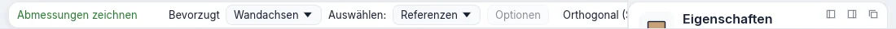
| Werkzeug | Einstellungen im Optionsstreifen |
|---|---|
| Wand | Höhe oder Tiefe; die Ebene, bis zu der die Wand reicht, oder Nicht verbunden mit ihrem Wert; Ausrichtung; Fortsetzen; Versatz; Radius (ausgegraut: gekrümmte Wände sind noch nicht verfügbar); Verbindung an den Enden und Automatisches Verbinden (ausgegraut); Außenseite links oder Außenseite rechts (die Leertaste vertauscht sie) |
| Tür, Fenster | Familie laden; Vor Ort modellieren (ausgegraut); Beim Platzieren beschriften mit Horizontal oder Vertikal, Führungslinie und ihrer Länge; Geladene Beschriftungen… (ausgegraut) |
| Objekt | Familie laden; Vor Ort modellieren (ausgegraut); Nach dem Einfügen drehen: das platzierte Objekt bleibt ausgewählt und Drehen beginnt |
| Dach | Die Form: Satteldach, Walmdach oder Flachdach; Neigung, von 5° bis 60°; Überstand, bis 2 m |
| Treppe | Breite, in Millimetern; Geländertyp oder Keiner |
| Bemaßungen | Was der Cursor an einer Wand zuerst erfasst: Wandachsen oder Wandflächen |
| Vergrößertes Detail (Detailausschnitt) | Der Maßstab der neuen Detailansicht oder Auf andere Ansicht verweisen und die Detailansicht oder freie 2D-Ansicht, auf die der Ausschnitt verweist (in einer freien 2D-Ansicht immer an) |
| Flächenumriss | Linie oder Linien wählen; mit Linien wählen Flächenregeln anwenden oder ein Versatz |
Die Schalter Ortho und Fang der Statusleiste gelten für jedes Werkzeug, das Linien zeichnet: Ortho hält die Segmente waagerecht oder senkrecht, Fang fängt Endpunkte, Mittelpunkte und Schnittpunkte. Ist Ortho ausgeschaltet, erzielt das Gedrückthalten von Shift beim Zeichnen dieselbe Einschränkung; ist es eingeschaltet, hebt Shift sie auf.
Elementbereich
Der Elementbereich rechts zeigt und ändert die Parameter dessen, woran Sie gerade arbeiten. Seine Kopfzeile ist eine einzige Zeile: der Typ mit seinem Menü und darunter die Familie, die Anzahl der gewählten Elemente, etwa Wände (1), und Typparameter, das die Parameter des Typs öffnet. Rechts davon Schließen (hebt die Auswahl auf) und Weitere Aktionen (⋯: Typparameter und die Aktionen der kontextabhängigen Registerkarte). Unter der Kopfzeile seine Registerkarten; die Zeilen der Parameter sind niedrig, mit einer breiten Spalte für die Werte:
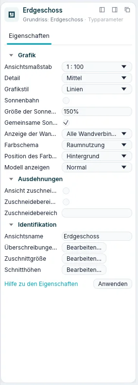
| Registerkarte | Was sie enthält |
|---|---|
| Eigenschaften | Die Typenauswahl, dann die Parameter, in Gruppen (Abhängigkeiten, Grafik, Identifikation…). Klicken Sie auf den Namen einer Gruppe, um sie einzuklappen. Grau dargestellte Werte sind schreibgeschützt: Sie werden aus dem Modell berechnet. Anwenden oder Enter bestätigt einen eingegebenen Wert |
| Materialien | Bei Wänden, Geschossdecken und Dächern: die Schichten des Typs mit ihren Farben und Dicken und eine Vorschau der Schichten |
| Klassifizierung | Die Kategorie, der Typ und die IFC-Klasse |
| Beziehungen | Die Ebene, das Basisbauteil, die eingesetzten Türen und Fenster, die Ansichten und die Bauteillisten, in denen es erscheint |
Die Typauswahl ist die Kopfzeile des Bereichs: eine kleine Vorschau des Typs (Wände, Böden und Dächer als ihre Schichten, Türen, Fenster und Bauteile als Bild), der Name des Typs mit ▾ und darunter die Familie. Klicken Sie darauf, um einen anderen Typ zu wählen: Die gewählten Elemente ändern ihren Typ, oder bei aktivem Werkzeug erhält das nächste Element diesen Typ. Die Liste öffnet sich über den Zeilen: Suchen Sie die Typen nach Namen; sie sind nach Familie gruppiert, jeder mit seiner Vorschau. Die Pfeiltasten bewegen, Enter wählt, Esc schließt die Liste.
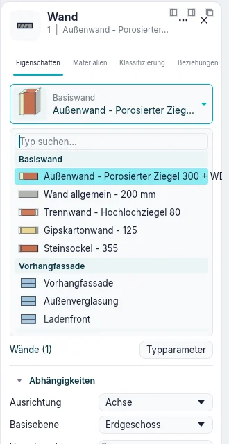
Was der Bereich zeigt, hängt von der Situation ab:
| Situation | Der Bereich zeigt |
|---|---|
| Nichts ausgewählt, kein Werkzeug | Die Eigenschaften der aktiven Ansicht (Maßstab, Detail, Grafikstil…) oder der im Projektindex angeklickten Ansicht |
| Ein Werkzeug aktiv | Den Typ des nächsten Elements, als Neu: Wand, Neu: Tür… |
| Ein Element ausgewählt | Seinen Typ und seine Exemplarparameter |
| Mehrere Elemente einer Kategorie | Ihre Anzahl, als Wände (3) |
| Elemente verschiedener Kategorien | Mehrfachauswahl, Gemeinsam (5) und die Anzahl je Kategorie, als 3 × Wände |
Längen werden in den Einheiten des Projekts geschrieben und gelesen (Millimeter in einem neuen
Projekt). Sie können einen Wert mit seiner Einheit eingeben, zum Beispiel 2.7m.
Projektindex
Ansichten in der Seitenleiste zeigt unter seinen Werkzeugen den Projektindex: die Ansichten, Bauteillisten, Pläne und Familien des Projekts in einer Baumstruktur. Klicken Sie auf ⊟ oder ⊞, um einen Zweig ein- oder auszuklappen.
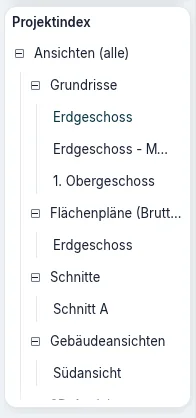
| Zweig | Inhalt |
|---|---|
| Ansichten (alle) ▸ Grundrisse | Die Grundrisse aller Ebenen, von der untersten an, und die in Grundrissen gezeichneten Detailausschnitte |
| Ansichten (alle) ▸ Flächenpläne (…) | Die Flächenpläne, ein Zweig pro Flächenschema |
| Ansichten (alle) ▸ Schnitte, Gebäudeansichten | Die Schnitte und die Ansichten |
| Ansichten (alle) ▸ Detailansichten | Die in Schnitten gezeichneten Detailausschnitte |
| Ansichten (alle) ▸ 3D-Ansichten | {3D}, die Standard-3D-Ansicht, und die gespeicherten 3D-Ansichten |
| Ansichten (alle) ▸ Freie 2D-Ansichten | Die freien 2D-Ansichten |
| Bauteillisten/Mengen | Die Bauteillisten des Projekts, dann die vordefinierten Bauteillisten |
| Pläne (alle) | Die Pläne, als Nummer - Name |
| Familien | Die Typen des Projekts, nach Kategorie: Wände, Türen, Fenster, Geschossdecken, Dächer, Bauteile und die übrigen |
Die Zweige der Flächenpläne, Schnitte, Ansichten, Detailansichten und freien 2D-Ansichten erscheinen nur, wenn sie etwas enthalten. Die aktive Ansicht ist fett geschrieben.
Bei einer Ansicht:
- ein Klick zeigt ihre Eigenschaften im Elementbereich, ohne sie zu öffnen;
- ein Doppelklick öffnet sie;
- ein Rechtsklick öffnet ihr Menü: Öffnen, Schließen (schließt ihre Fenster), Ansicht duplizieren ▸ (Duplizieren, Mit Detaillierung duplizieren), Ansichtsvorlage anwenden…, Ansichtsvorlage aus Ansicht erstellen…, Löschen, Umbenennen…, Eigenschaften.
Das Menü eines Plans hat statt der beiden Vorlageneinträge Ansichtsvorlage auf alle Ansichten anwenden… und kein Ansicht duplizieren. {3D} kann weder gelöscht noch umbenannt werden.
Bei einer Bauteilliste des Projekts wählt ein Klick sie aus, ein Doppelklick öffnet sie, und das Rechtsklickmenü hat Öffnen, Eigenschaften der Bauteilliste… und Löschen. Eine vordefinierte Bauteilliste öffnet sich mit einem Klick.
Bei einem Typ unter Familien öffnet ein Doppelklick seine Typparameter; das Rechtsklickmenü hat Typparameter, Duplizieren…, Exemplar erstellen (startet das Werkzeug, das ihn platziert, mit diesem Typ) und Löschen.
Nach einem Klick in den Projektindex bewegt sich die Tastatur darin: Up und Down gehen von Zeile zu Zeile (die Eigenschaften der Ansicht erscheinen im Elementbereich), Right öffnet einen Zweig, Left schließt ihn oder geht zum Zweig hinauf, in dem die Zeile steht, Enter öffnet die Ansicht.
Von hier kommen Ansichten auch auf Pläne. Ziehen Sie einen Grundriss, einen Schnitt, eine Ansicht, eine freie 2D-Ansicht, eine Legende, eine gespeicherte 3D-Ansicht oder eine Bauteilliste auf den offenen Plan: Ihr Ansichtsfenster folgt dem Cursor und bleibt dort, wo Sie es loslassen. Oder lassen Sie sie auf dem Namen eines Plans im Baum los: Der Plan öffnet sich und das Ansichtsfenster folgt dem Cursor, bis Sie klicken. Beim Ziehen rollt der Baum, wenn der Cursor seinen Rand erreicht. Das Kontextmenü eines Plans hat Ansicht hinzufügen…. Die Ansichten auf einem Plan stehen darunter; das Kontextmenü einer solchen Ansicht hat Vom Blatt entfernen, das von Pläne (alle) hat Neues Blatt…. In einer 3D-Ansicht hat das Kontextmenü außerdem Auf 3D-Ausdehnung zoomen: das ganze Modell, auch die in der Ansicht ausgeblendeten Elemente. Eine Ansicht, die schon auf einem Plan ist, wird abgelehnt, mit dem Grund in der Befehlszeile; Legenden und Bauteillisten können auf mehreren Plänen stehen. Eine gespeicherte 3D-Ansicht erscheint auf dem Plan mit den Kanten, die ihre Kamera sieht.
Das Kontextmenü eines Grundrisses, eines Schnitts oder einer freien 2D-Ansicht hat Referenzierende Ansichten suchen: die Ansichten, die ihr Symbol zeigen, und die Pläne, auf denen sie steht; Gehe zu Ansicht öffnet die gewählte.
Ansichten- und Familienstreifen
Der Streifen unter dem Zeichenbereich hat drei Modi, gewählt mit den Schaltflächen links:
- Ansichten: echte Vorschauen der Ansichten, gegliedert in Alle, Geöffnet (n), Grundrisse, Schnitte, Ansichten, 3D, Legenden, Bauteillisten und Pläne. Die aktuelle Ansicht ist umrahmt, geöffnete haben eine Linie in der Akzentfarbe. Ein Klick auf eine Miniatur öffnet die Ansicht; die rechte Maustaste öffnet das Menü der Ansicht, mit Im aktiven Fenster öffnen; auf den geöffneten Plan oder auf die Miniatur eines Plans gezogen, wird sie dort platziert. + erstellt eine neue Ansicht: Standard-3D-Ansicht, Ansicht speichern, Duplizieren, Plan oder Bauteilliste/Mengen.
- Familien: eine Vorschau je Typ, nach Familienkategorie gegliedert. Ein Klick auf eine Vorschau platziert diesen Typ; in einen Grundriss gezogen wird er dort eingefügt, wo Sie loslassen. Eine Tür oder ein Fenster, nahe einer Wand losgelassen, wird in die Wand gesetzt, entlang der Wand.
- Befehle: der Verlauf der Befehlszeile. Ein Klick auf eine eingegebene Zeile führt sie erneut aus.
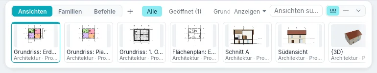
Rechts filtert Anzeigen die Miniaturen nach Disziplin und Phase, das Suchfeld nach Namen, und drei Schaltflächen wählen die Größe: Vorschauen, Kompakt und Ausblenden.
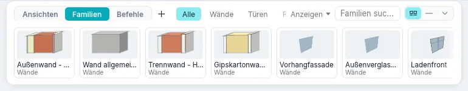
Passen die Gruppen nicht neben die Modi, werden sie in einem Menü zusammengefasst, etwa Alle ▾. Um dem Zeichenbereich den Platz des Streifens zu geben, blenden Sie ihn mit Ansichtenleiste aus, der letzten Schaltfläche der Statusleiste, oder mit F9; dieselbe Schaltfläche oder Taste holt ihn zurück.
Bereiche
Der Elementbereich lässt sich verschieben. Ziehen Sie ihn an seiner Kopfzeile: Er dockt links oder rechts vom Zeichenbereich an oder schwebt dort, wo Sie ihn loslassen. Die Schaltflächen oben rechts im Bereich docken ihn links oder rechts an oder lassen ihn schweben; Ansichten ▸ Fenster ▸ Paneele blendet ihn und die anderen Bereiche ein oder aus. Jeder Bereich bleibt auch in den nächsten Sitzungen dort, wo Sie ihn hingesetzt haben.
Während Sie einen Bereich ziehen, werden nur die Stellen gezeichnet, an denen er wirklich andockt, jede als der Bereich, der er dort wird. Die Stelle unter dem Zeiger ist kräftig gezeichnet, die anderen nur angedeutet. Anderswo wird nichts gezeichnet, und der Bereich schwebt, wo Sie ihn loslassen.
Dialoge
Jeder Dialog öffnet sich in der Mitte des Bildschirms, jedes Mal, wenn er sich öffnet, auch wenn er beim letzten Mal verschoben wurde oder das Fenster seine Größe geändert hat. Einmal geöffnet, bleibt er, wo er ist: Ziehen Sie ihn an seiner Titelleiste, um ihn zu verschieben. Eine Änderung in ihm, wie der Schalter Vorschau, verschiebt ihn nicht.
Jeder Dialog hat eine feste Größe, die sich mit seinem Inhalt nicht ändert. Eine Ausnahme sind die Dialoge, die um eine lange Liste oder Tabelle gebaut sind (Materialien, Sichtbarkeit/Grafiken, Objektstile, Filter, Linienstile und Linienmuster, Füllmuster, Linienstärken, Bauteillisteneigenschaften, Projekt- und gemeinsam genutzte Parameter, Tastaturkürzel, Nicht verwendete bereinigen, IFC-Exportklassen, Ansichtsvorlagen): Durch Ziehen an einem ihrer Ränder werden sie größer, nie kleiner als beim ersten Öffnen und nie größer als der Bildschirm, und die Liste wächst mit. Sie öffnen sich wieder in der Mitte mit der zuletzt gegebenen Größe.
Zeichenbereich und Ansichtsfenster
Jede geöffnete Ansicht ist ein Fenster im Zeichenbereich. Eine erneut geöffnete Ansicht kommt nach vorn; mindestens ein Fenster bleibt immer geöffnet. Oben links in der Ansicht zeigt die Ansichtsauswahl ihren Namen: Ihr Menü listet die Ansichten auf und ordnet die Fenster an, und + daneben erstellt eine neue Ansicht. Auch Ansichten ▸ Fenster ordnet sie an:
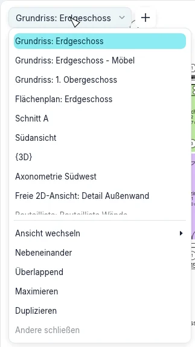
| Kachel | Funktion |
|---|---|
| Ansicht wechseln | Listet die geöffneten Fenster auf; das aktive ist abgehakt |
| Duplizieren | Öffnet ein zweites Fenster der aktiven Ansicht, mit eigenem Zoom |
| Überlappend | Überlappende Fenster, jedes mit seiner Titelleiste: Ziehen Sie einen Titel, um ein Fenster zu verschieben, seine Ränder, um seine Größe zu ändern |
| Nebeneinander | Alle Fenster nebeneinander, jedes mit einer Titelleiste; das aktive hat einen farbigen Titel und Rahmen |
| Maximieren | Das aktive Fenster füllt den Zeichenbereich; die anderen warten darunter |
| Andere schließen | Schließt alle Fenster außer dem aktiven |
| Paneele | Blendet die Eigenschaften, den Projektindex, die Befehlszeile, die Navigationsleiste, die Tastaturkurzbefehle und die Zuletzt verwendeten Dateien ein oder aus |
Klicken Sie in ein Fenster, um es zu aktivieren: Die Werkzeuge arbeiten im aktiven Fenster, die anderen zeigen das Modell nur an. Bei Nebeneinander und Überlappend schließt das × in der Titelleiste eines Fensters dieses Fenster. Ctrl+Tab wechselt zum zuvor benutzten Fenster.
Nebeneinander setzt das aktive Fenster oben links und die anderen danach, vom zuletzt aktiven an; Ansicht wechseln listet sie in derselben Reihenfolge. Ordnen Sie erneut an, nachdem Sie in einem anderen Fenster gearbeitet haben, kommt dieses an erste Stelle.
Optionen ▸ Benutzeroberfläche ▸ Tastaturkurzbefehle listet die Befehle mit ihren Kurzbefehlen. Suchen Sie einen Befehl nach Namen oder nutzen Sie Filter (Alle, Alle definierten, Alle nicht definierten, Alle reservierten); wählen Sie einen Befehl, tippen Sie die Tasten in Neue Tasten drücken und klicken Sie auf Zuweisen. Dieselben Tasten können mehreren Befehlen gehören: im Zeichenbereich eingegeben, zeigt die Statusleiste den ersten, die Pfeiltasten gehen durch die anderen, Enter oder Space führt den gezeigten aus; Exportieren… schreibt alle Kurzbefehle in eine XML-Datei, Importieren… liest eine solche Datei als Ihre Kurzbefehle ein (eine Datei, die keinen Befehl von BIMopen nennt, wird abgelehnt, und Ihre Kurzbefehle bleiben); Entfernen nimmt die von Ihnen hinzugefügten Tasten weg. Ihre Kurzbefehle bleiben für die nächsten Sitzungen und starten den Befehl, wenn Sie sie tippen, wie die vorgegebenen.
Ein Werkzeug wechselt nie von selbst die aktive Ansicht. In einer Ansicht gestartet, in der es nicht arbeiten kann (ein Dach oder ein Raum in einer 3D-Ansicht, eine Ebene in einem Grundriss, eine Fläche außerhalb eines Flächenplans), öffnet es Gehe zu Ansicht: die geeigneten Ansichten, der Grundriss der aktiven Ebene vorausgewählt. Ansicht öffnen öffnet die gewählte Ansicht und startet dort das Werkzeug; Abbrechen lässt alles, wie es war. Begrenzung bearbeiten eines Bodens, Dachs, einer Treppe oder eines Geländers fragt aus einem Schnitt oder einer Ansicht ebenso nach einem Grundriss seiner Ebene, und ein neuer Schnitt oder eine neue Ansicht lässt den Grundriss aktiv, in dem sie gezeichnet wurden. Verschieben, Kopieren, eine lineare In Reihe wiederholen und An Linie spiegeln funktionieren auch in Schnitten und Ansichten: entlang der Ansicht; die Achse ist die vertikale Ebene quer zur Ansicht durch ihren ersten Punkt, wie auch immer sie gezeichnet wird. Eine radiale In Reihe wiederholen funktioniert in Grundrissen und 3D-Ansichten: in einem Schnitt oder einer Ansicht bleibt sie gewählt, ihre Klicks bewirken aber nichts, und die Statusleiste verlangt Linear.
Ansichten in eigenen Fenstern
Eine Ansicht kann den Zeichenbereich verlassen: Eigenes Fenster in ihrem Menü (Rechtsklick im Projektindex, auf ihre Miniatur im Ansichtenstreifen oder auf die Titelleiste eines nebeneinander angeordneten Fensters), oder ziehen Sie die Titelleiste eines nebeneinander oder überlappend angeordneten Fensters aus dem Zeichenbereich. Auf dem Computer öffnet sich die Ansicht in einem eigenen Systemfenster, das Sie auch auf einen anderen Monitor verschieben, in der Größe ändern und maximieren können; im Web schwebt sie in der Seite, weil der Browser keine weiteren Fenster öffnet. Eine im Programm schwebende Ansicht hat auch Systemfenster, um sie in ein Systemfenster zu bringen.
Sie können mehrere Ansichten zugleich lösen. Jede behält ihre Werkzeuge, ihre Ansichtsleiste und in 3D ihren Orientierungswürfel; die Auswahl ist in allen zu sehen, und die aktive Ansicht ist die zuletzt angeklickte. Zurück ins Hauptfenster oben in der Ansicht bringt sie in den Zeichenbereich zurück; eine schwebende Ansicht kehrt auch zurück, wenn Sie sie auf das Band oben im Zeichenbereich ziehen, das hervorgehoben wird. Das Schließen des Systemfensters bringt sie ebenso zurück. Wo jede gelöste Ansicht war, bleibt beim Projekt, und beim erneuten Öffnen kehren die gelösten Ansichten an ihren Platz zurück.
Zeichnen in jeder Ansicht
Eine Wand wird im Grundriss und in einer 3D-Ansicht gleich gezeichnet, auf der Ebene des Geschosses: ab dem ersten Klick folgt die Wand dem Cursor, im Grundriss als Umriss und in 3D als durchscheinender Körper, in ihrer Höhe und Dicke; eine gestrichelte Linie führt ihre Achse weiter, andere halten sie in einer Flucht mit den schon geklickten Punkten der Kette. Die temporäre Bemaßung, blau mit Hilfslinien und Strichen, gibt Länge und Winkel; tippen Sie eine Länge und drücken Sie Enter, um die Wand so lang zu zeichnen. Die Fänge (Endpunkte, Mittelpunkte, Schnittpunkte, senkrecht, Flächen und Achsen anderer Wände) wirken auch in 3D. Die in einer 3D-Ansicht gewählte Wand zeigt wie im Grundriss ihre temporären Bemaßungen, die Umkehrpfeile und die Enden zum Ziehen. In Schnitten und Ansichten wird keine Wand gezeichnet: Gehe zu Ansicht bietet einen Grundriss oder die 3D-Ansicht an.
Dächer und Böden werden auch in der 3D-Ansicht gezeichnet, auf der Ebene ihres Geschosses: Wände auswählen nimmt die Wand unter dem Cursor (ihre Oberkante leuchtet orange, Tab nimmt die ganze Kette), die Linien werden mit allen Skizzenwerkzeugen und temporären Bemaßungen gezeichnet, und Grundfläche bearbeiten eines Dachs oder Bodens öffnet seine Skizze in 3D. Begrenzung bearbeiten einer Wand wirkt in 3D auf der Ebene der Wand und in einem Schnitt oder einer Ansicht, die sie frontal zeigt.
Während Sie zeichnen oder eine Skizze bearbeiten, können Sie die Ansicht wechseln (Miniaturen, Projektindex, eigene Fenster): das Werkzeug bleibt aktiv und arbeitet in der neuen Ansicht weiter, wenn es dort kann. Eine im Grundriss begonnene Wandkette geht in 3D ab ihrem letzten Punkt weiter, und eine in einer Ansicht begonnene Profilskizze geht in 3D weiter. Die Wand in Arbeit und die Skizze erscheinen in allen offenen Ansichten zugleich.
Ansichtsleiste
Unten in der Mitte jeder Ansicht eine dunkle Leiste mit Schaltflächen:
| Schaltfläche | Funktion |
|---|---|
| Auswählen und ändern | Beendet den Navigationsmodus und kehrt zum Auswählen zurück, Esc |
| Pan, Orbit (3D), Zoom | Ist einer eingeschaltet, zieht die linke Maustaste die Ansicht; Esc beendet ihn |
| Zoom passend | Passt die ganze Ansicht in das Fenster ein, Home |
| Zoomoptionen | Das Zoom-Menü, siehe unten |
| Der Grafikstil | Drahtmodell, Linien, Schattiert, Schattiert mit Kanten, Volle Farben |
| Das Detail | Grob, Mittel oder Fein |
| Sonne und Schatten | In 3D-Ansichten die Sonne und ihre Schatten |
| Zuschneiden | Ansicht zuschneiden schneidet die Ansicht auf ihren Zuschneidebereich zu oder hebt das Zuschneiden auf; Zuschneidebereich anzeigen blendet seinen Rahmen ein oder aus |
| Vorübergehend isolieren | Blendet Elemente oder Kategorien in dieser Ansicht aus oder isoliert sie, bis Sie dies zurücksetzen; umrahmt, solange es aktiv ist |
| Verborgene zeigen | Zeigt die ausgeblendeten Elemente, um sie wieder einzublenden |
| Vollbild | Die Ansicht allein im Fenster; Vollbild beenden kehrt zurück |
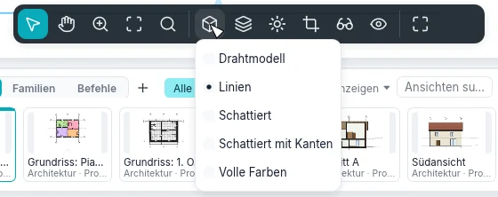
Der Maßstab der Ansicht steht rechts in der Statusleiste, zum Beispiel 1 : 100: Er öffnet die
Liste der Maßstäbe; unter Benutzerdefiniert geben Sie einen anderen ein, etwa 1 : 75, und
drücken Enter. Ein Plan hat keinen eigenen Maßstab: Seine Ansichten haben ihren.
Zoom
Zoomoptionen in der Ansichtsleiste öffnet das Zoom-Menü: Vergrößern, Verkleinern, Bereich vergrößern (ziehen Sie ein Rechteck auf der Ansicht; Esc bricht ab), Verkleinern (2x), Zoom auf Fenstergröße, Alle auf Fenstergröße zoomen (jedes offene Fenster), Zoom auf Plangröße (die Ansicht in Druckgröße) sowie Vorheriges Pan/Zoom und Nächstes Pan/Zoom, die durch die Ausschnitte dieses Fensters vor und zurück gehen. Getippt: ZR, ZO, ZF, ZA, ZS, ZP.
Das Navigationsrad ist nicht verfügbar.
Navigation in den Ansichten
| In Grundrissen, Schnitten, Ansichten und Plänen | |
|---|---|
| Mausrad | Zoomt an der Cursorposition hinein und heraus |
| Ziehen mit der mittleren Taste | Verschiebt |
| Ziehen mit der linken Taste | Ein Auswahlfenster, oder verschiebt die gewählten Elemente (Auswählen und Ändern) |
| Home | Passt die ganze Ansicht in das Fenster ein |
| In 3D-Ansichten | |
|---|---|
| Ziehen mit der rechten Taste oder Shift + mittlere Taste | Orbitiert um das Modell |
| Ziehen mit der mittleren Taste | Verschiebt |
| Ziehen mit der linken Taste | Ein Auswahlfenster, oder verschiebt die gewählten Elemente |
| Mausrad | Zoomt hinein und heraus |
| Home | Passt das ganze Modell in das Fenster ein |
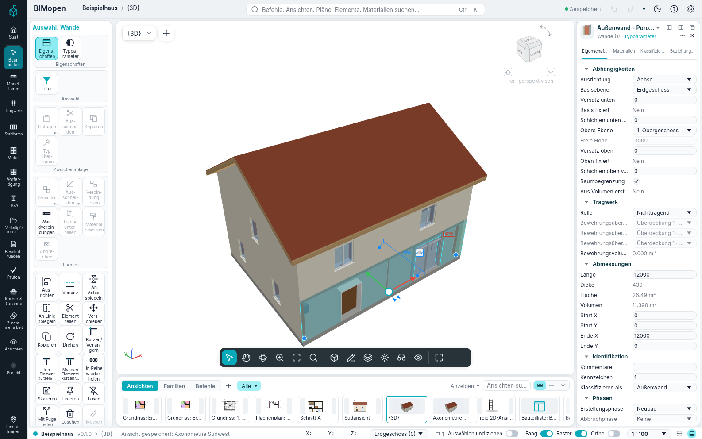
Ein kleines Achsenkreuz in der unteren Ecke der 3D-Ansicht zeigt die Richtungen der Achsen: X rot, Y grün, Z blau. Eine gespeicherte 3D-Ansicht merkt sich, wo Sie sie verlassen haben. An der Auswahl lassen die Verschiebepfeile sie ziehen: Ziehen Sie einen Pfeil, um entlang zu verschieben, die Mitte, um im Grundriss frei zu verschieben; der Abstand wird beim Ziehen angezeigt, und das Loslassen verschiebt wie Verschieben.
In 3D zoomt das Mausrad und hält dabei den Modellpunkt unter dem Cursor fest, und der Orbit dreht sich um die Mitte der Auswahl oder, ohne Auswahl, um den Punkt, auf den die Ansicht blickt.
Der Orientierungswürfel in der oberen Ecke der 3D-Ansicht dreht sich mit dem Modell. Seine Kanten und Ecken sind abgeschrägt, und jeder Teil ist ein eigenes Ziel: die sechs Flächen (OBEN, UNTEN, VORNE, HINTEN, RECHTS, LINKS, ihre Namen perspektivisch darauf geschrieben und mit ihnen gedreht) blicken gerade auf diese Seite; die zwölf Kantenstreifen blicken von zwischen zwei Seiten; die acht Eckdreiecke von zwischen drei (eine isometrische Ansicht). Der Teil unter dem Zeiger wird in der Hervorhebungsfarbe getönt, der, von dem die Ansicht jetzt blickt, bleibt hervorgehoben; ein Klick dreht die Ansicht in einem kurzen Übergang dorthin. Ziehen Sie den Würfel, um zu orbitieren.
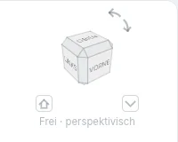
Unter dem Würfel steht die Ausrichtung der Ansicht: Vorne · perspektivisch, Oben – Vorne · perspektivisch, Isometrisch · perspektivisch oder Frei · perspektivisch, wenn die Ansicht von keinem Teil des Würfels blickt.
Wird eine Fläche gerade von vorn gesehen, drehen vier Dreiecke um den Würfel (Nach oben drehen, Nach unten drehen, Nach links drehen, Nach rechts drehen) die Ansicht um eine Vierteldrehung zur Fläche jenseits dieser Seite. Die zwei gebogenen Pfeile oben rechts, Nach links kippen und Nach rechts kippen, drehen das Bild um eine Vierteldrehung gegen oder im Uhrzeigersinn.
Die kleine Schaltfläche mit dem Haus unten links, Startansicht, führt zur Startansicht zurück; ein Rechtsklick darauf bietet Als Startansicht festlegen, das die aktuelle Ansicht zur Startansicht macht (jede 3D-Ansicht hat ihre eigene, mit dem Projekt gespeichert). Die kleine Schaltfläche unten rechts, Würfelmenü, oder ein Rechtsklick auf den Würfel öffnet das Menü: Orthogonal / Perspektivisch (vorerst ist die Ansicht nur perspektivisch: Orthogonal ist ausgegraut, „Noch nicht verfügbar“); Als Startansicht festlegen; Zoom auf Fenstergröße, das das Modell in das Fenster einpasst; Optionen…, das die Seite Orientierungswürfel der Optionen öffnet. Von rechts nach links (Arabisch) steht der Würfel oben links, und die zwei kleinen Schaltflächen tauschen die Seiten; die Pfeile bleiben, wohin sie zeigen.
Das Kontextmenü einer Ansicht
Klicken Sie mit der rechten Maustaste in eine Ansicht, während kein Werkzeug aktiv ist. Befindet sich der Cursor auf einem nicht ausgewählten Element, wird dieses zuerst ausgewählt. Das Menü enthält, bei einer Auswahl, zuerst die Änderungsbefehle (Verschieben, Kopieren, Drehen, Ausrichten, Versatz und die anderen), dann:
- Abbrechen: hebt die Auswahl auf;
- Alle Exemplare auswählen ▸ In Ansicht sichtbar oder ▸ Im gesamten Projekt: die Elemente desselben Typs; Vorherige auswählen: die vorher getroffene Auswahl;
- In Ansicht ausblenden ▸ Elemente oder ▸ Kategorie: blendet die ausgewählten Elemente oder ihre ganzen Kategorien in dieser Ansicht aus;
- Benutzerdefinierte Grafik ▸ Nach Kategorie…: öffnet Sichtbarkeit und Grafik für die Kategorien der Auswahl;
- Sichtbarkeit und Grafik….
Solange ein Werkzeug aktiv ist, öffnet ein Rechtsklick stattdessen das Menü des Werkzeugs, und der laufende Schritt bleibt: Abbrechen (was Esc tut, das den Schritt weiterhin abbricht), Wiederholen [Befehl], Fang-Überschreibungen ▸ (der Fang des nächsten Punkts, wie die Tasten mit zwei Buchstaben; in jeder Ansicht, siehe Fang), Bereich vergrößern, Verkleinern (2x), Zoom auf Fenstergröße, Vorheriges Pan/Zoom, Nächstes Pan/Zoom und Eigenschaften. Es ist dasselbe in Grundrissen, Schnitten, Ansichten, 3D-Ansichten und auf Plänen. Bei offenem Menü schließen Esc oder ein Klick in die Ansicht nur das Menü.
Fang
Weitere Einstellungen ▸ Fangen… (im BIMopen-Stil der Befehl Fangen…) öffnet das Fenster Fang, in beiden Stilen gleich:
- Fangen aus schaltet alles aus (wie der Schalter Fang der Statusleiste, der beim nächsten Start so bleibt).
- Fangschritte für Längenmaße und Fangschritte für Winkelmaße, jeweils mit eigenem Kästchen: Werte durch Semikolon getrennt (vorgegeben 1000; 100; 10 mm und 90°; 45°; 15°; 5°; 1°). Der Zoom wählt den Schritt: nah herangezoomt feinere Schritte.
- Objektfang: ein Kästchen für Endpunkt, Mittelpunkt, Nächster, Arbeitsebenenraster, Quadrant, Schnittpunkt, Mitte, Lotrecht, Tangente und Entfernte Objekte, mit ihren zwei Buchstaben; Alle auswählen und Keine auswählen. Ist Nächster aus, bietet die Linie unter dem Cursor weiter ihre Enden und ihren Mittelpunkt, auch weit entfernt. Entfernte Objekte (anfangs aus) richtet den Punkt waagrecht oder senkrecht an den Enden entfernter Linien aus, mit einer gestrichelten Hilfslinie.
- Temporäre Überschreibungen: die Liste der zwei Buchstaben, die für einen Punkt gelten.
- Vorgaben wiederherstellen stellt alles auf den Anfang zurück.
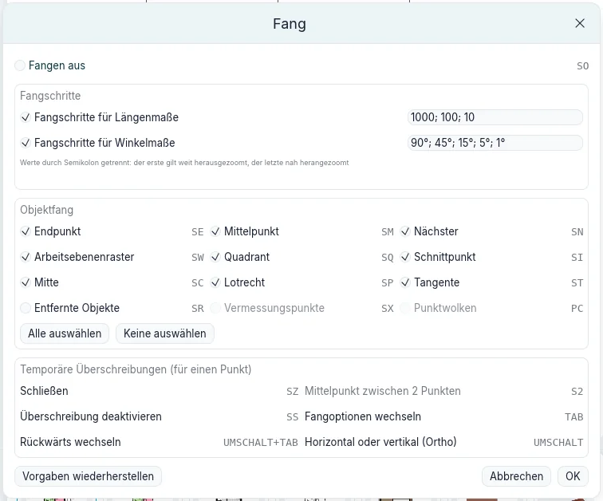
Die Einstellungen gehören zum Programm, nicht zum Projekt: sie bleiben zwischen den Sitzungen.
Beim Zeichnen von einem Punkt aus (Wände, Linien, Raster, Referenzebenen, Skizzen und der zweite
Strahl von Drehen) fängt das Segment seine Richtung in jeder Ansicht gleich: waagrecht oder
senkrecht, parallel oder lotrecht zu einer nahen Linie oder ein Vielfaches des Winkelschritts, den
der Zoom gibt; nur wenn der Cursor wenige Pixel von dieser Richtung entfernt ist, sonst bleibt der
Winkel frei. Eine gestrichelte Hilfslinie folgt der Richtung, ein Bogen mit dem Wert zeigt den
Winkel, und die Statusleiste sagt etwa Fang: Winkel 30° · Schritt 15°. Die Länge wird auf den
Längenschritt gerundet. Winkel gemessen ab in der Optionsleiste zählt die Winkel ab der
Horizontalen Achse der Ansicht oder ab dem Vorherigen Segment. In der 3D-Ansicht wird alles
auf der Arbeitsebene (der Ebene des Geschosses) gemessen. In der Befehlszeile ändert
snap {"angles":[45,15],"objects":{"quadrant":false}} die Einstellungen, snap allein zeigt sie.
Der Befehl anglesnap 0,0 3,0.02 (auch über MCP, und snap mit zwei Punkten) gibt die
Richtung zurück, in die ein Segment fängt, nach denselben Regeln wie jede Ansicht.
Oben im Menü startet Wiederholen [Befehl] das zuletzt benutzte Werkzeug erneut; Enter tut dasselbe, wenn kein Werkzeug aktiv und die Befehlszeile leer ist. Das Menü ist in Grundrissen, Schnitten und 3D-Ansichten dasselbe.
Befehlssuche und Befehlszeile
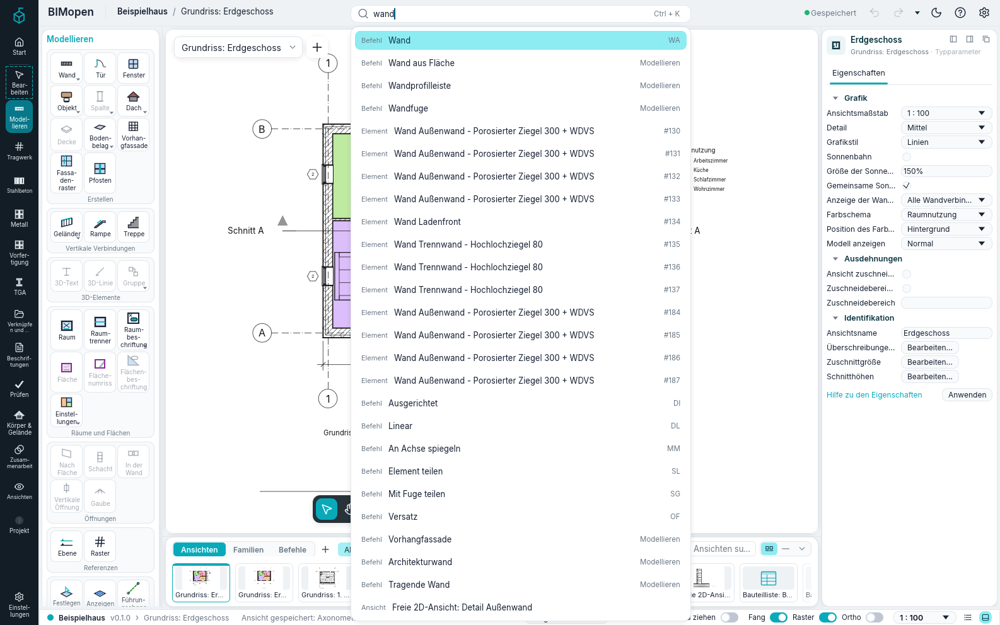
Drücken Sie Ctrl+K oder klicken Sie in das Suchfeld in der Mitte der oberen Leiste und tippen Sie einige Buchstaben: Die Liste zeigt die passenden Befehle, Ansichten, Pläne, Bauteillisten, Elemente und Materialien. Klicken Sie auf ein Ergebnis oder wählen Sie es mit den Pfeiltasten und drücken Sie Enter: Ein Befehl startet, eine Ansicht öffnet sich, ein Element wird gewählt und gezeigt, ein Material öffnet sich in Materialien. Die Suche findet jeden Befehl des Werkzeugbereichs, auch die der kontextabhängigen Karte (mit einer auf einem Plan gewählten Ansicht findet «aktivieren» Ansicht aktivieren), und führt ihn aus wie seine Kachel.
Das Suchfeld ist auch die Befehlszeile. Sie müssen nicht hineinklicken: Alles, was Sie in einer
Ansicht eingeben, während kein Feld bearbeitet wird, landet dort. Enter führt ein Tastenkürzel
(WA, DR, ZF…) oder einen Befehl mit seinen Argumenten (wall 0,0 5,0) so aus, wie er
getippt wurde; Up und Down holen die zuvor eingegebenen Zeilen zurück. Das Protokoll
dessen, was getan wurde, die ausgeführten Befehle, ihre Ergebnisse und die Fehler in Rot, steht im
Befehlsprotokoll am rechten Ende der Statusleiste und im Modus Befehle des Streifens. Das
Kapitel zur Befehlszeile beschreibt die Befehle.
Statusleiste
Links zeigt die Statusleiste das Projekt, die Version und die aktive Ansicht, dann:
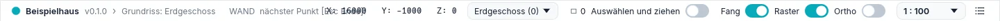
- solange ein Werkzeug aktiv ist, was das Werkzeug erwartet, zum Beispiel
WALL next point [Esc to finish]:; - ohne Werkzeug die Kategorie und den Typ des Elements unter dem Cursor, als Wände : Außenwand - Porosierter Ziegel 300 + WDVS;
- während Sie ziehen, die Länge der Verschiebung, als Verschieben: 1500;
- andernfalls die letzte Zeile des Befehlsprotokolls.
Rechts: die Koordinaten des Cursors (X, Y, Z) in Metern; die aktive Ebene, deren Menü den Grundriss einer anderen Ebene öffnet; die Anzahl der gewählten Elemente, die Filter öffnet; die Schalter Auswählen und ziehen (Elemente ziehen, ohne sie vorher auszuwählen), Fang, Raster und Ortho; der Maßstab der Ansicht; Befehlsprotokoll; und Ansichtenleiste (F9), die den Ansichtenstreifen aus- oder wieder einblendet.
Auswählen in Kürze
Das Kapitel zum Auswählen und Ändern beschreibt das Auswählen vollständig. Das Wichtigste:
- Klicken Sie auf ein Element, um es auszuwählen; klicken Sie auf einen leeren Punkt, um die Auswahl aufzuheben;
- Ctrl + Klick fügt ein Element der Auswahl hinzu, Shift + Klick nimmt es heraus; Tab hebt das nächste Element unter dem Cursor hervor, oder eine Kette verbundener Wände;
- ziehen Sie von links nach rechts, um auszuwählen, was vollständig im Rechteck liegt, von rechts nach links, um auszuwählen, was es berührt;
- ziehen Sie ein ausgewähltes Element, um es zu verschieben;
- Ctrl+A wählt die Elemente der Ebene des geöffneten Grundrisses aus, oder in einer 3D-Ansicht die des ganzen Modells; Del löscht die Auswahl; Esc hebt sie auf.
Auf einem Touchscreen geschieht dasselbe mit den Fingern und dem Stift: siehe Touch-Modus.